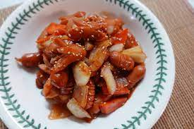

목차
- 숙소로의 여정
- 충성! 전역&800일기념촬영
- 800일 늦은 점심은 돈까쓰
- 앗뜨뜨 부상투혼! 화상의 소시지케챱볶음!
비엔소시지케챱볶음 만드는법
4. 앗뜨뜨 부상투혼! 화상의 소시지케챱볶음!
바보같이 소시지튀김을 실시한 성욱이.. 결국 화상을 입고 마는데..
성욱이가 상상한 소세지케챱볶음과는 다르게
엄~~~청 까맣고 막 소스가 뭔가 색깔이 구리구리하고
냄새도 구리구리 했다.. 하지만!! 맛은 아주 냠냠했다!
예슬이도 "역시~~ 성욱이가 만든 요리라 어어어엄청 맛있네" 라고했다.
그렇다고 해라 ㅡㅡ 아무튼 그래따

성욱이가 상상한 소세지케챱볶음..
아무튼 탄산있는 샴페인이랑 같이 묵어서 맛있었어용!
여담으로 샴페인 뚜껑 딸때 팡! 하고 터져서 예슬이도 성욱이도 깜짝 놀랐어요
샴페인.. 위험한 녀석.. 그래도 색깔도 이쁘고 맛도있고해서 엄청 좋았어용!!
| 아침 |
사라짐 |
| 점심 |
숙소로의 여정 |
| 저녁 |
기념촬영과 돈까쓰 |
| 새벽 |
부상투혼 소시지케챱볶음 |